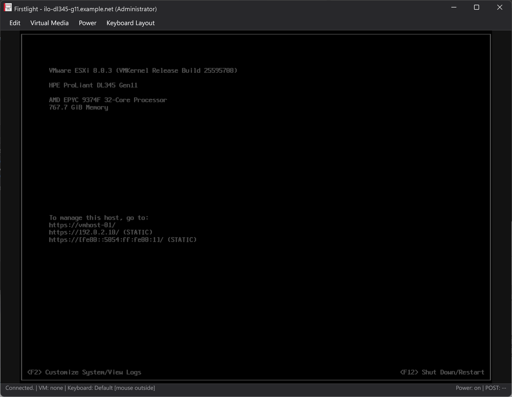
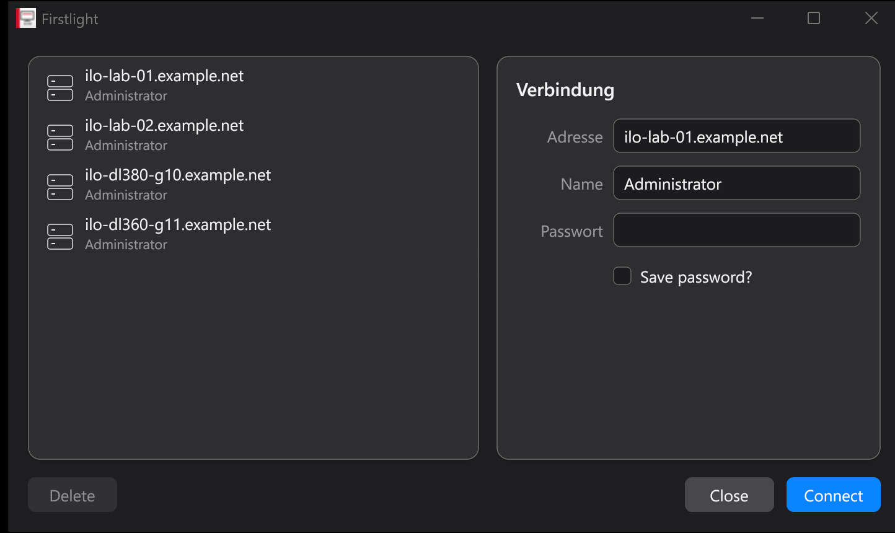

A remote console for HPE iLO managed servers.
Firstlight is a native Windows KVM client for servers managed through HPE Integrated Lights-Out. Full keyboard, video and mouse access from power-on through BIOS/UEFI to the running operating system, plus ISO virtual media, power control and boot override. One self-contained executable, with no browser plug-in, Java or .NET runtime.

Everything the console session needs, in one window
Firstlight is a community-maintained successor to the legacy HPLOCONS client, and a foundation for what that client never did.
Both protocol generations
The legacy V1 protocol used by iLO 4, including KVM and command-channel encryption, and protocol V2 or newer for later generations. The version is detected from the iLO itself.
Shared and seized sessions
Join a busy console as a shared session or seize it. As the leader of a legacy shared session you get an explicit Allow/Deny prompt for incoming join requests.
ISO virtual media
Mount a local ISO as a virtual CD/DVD on both protocol paths, for installation, driver injection or recovery. Transport state reports whether firmware actually saw the device.
Power and boot override
Momentary press, press-and-hold, cold boot and reset, each destructive action behind a confirmation. Set a verified one-time virtual CD/DVD boot override without power-cycling.
Multi-session launcher
Keep a list of iLO systems and connect to several at once, each in its own window. Saved passwords are encrypted for the current Windows user with DPAPI, opt-in per entry.
Native, not a web view
A GPU-rendered interface built on Gio and drawn through Direct3D 11. No Electron, no bundled browser engine. Light and dark themes follow the Windows setting and switch live.
A modular keyboard layout system
A remote console has a problem a local terminal does not: the server cannot see which keyboard is on your desk.
iLO carries raw USB HID scancodes, and firmware, BIOS/UEFI and most installers read those as a US keyboard.
Untranslated, the key labelled Z on a German board arrives as Y, and @ does not arrive at all.
Firstlight fixes that in data instead of in code. Every layout is a JSON file, so a new language needs no Go change, no rebuild and no pull request. US and German ship built in and switch at runtime from the Keyboard Layout menu.
A map is a delta over a protected base
A protected base map, us-base, holds the identity translation: 96 physical key rules and
97 clipboard character rules. A language map declares "extends": "us-base" and lists only what differs.
The built-in German map is 20 physical rules, because the other 76 keys already behave correctly.
Inheritance is resolved when the maps load, nests deeper than one level, and a map that extends itself through a cycle is rejected instead of hanging the loader.
Physical rules rewrite one key per state
The German 7, which carries / on Shift and { on AltGr:
{
"input": "7",
"plain": { "key": "DIGIT_7" },
"shift": { "key": "SLASH" },
"altGr": { "key": "LEFT_BRACKET",
"modifiers": ["left_shift"] }
}Text rules drive clipboard paste
Clipboard text is retyped as real keystrokes, so it works in BIOS/UEFI screens that have no clipboard of their own:
{
"char": "@",
"strokes": [
{ "key": "DIGIT_2", "modifiers": ["left_shift"] }
]
}
Because the remote target is always US, us-base already covers every character a US keyboard
can produce, so most language maps need no text rules at all. The built-in German map defines none.
How a keystroke resolves
- State priority is AltGr, then Shift, then plain.
- A key with a
plainrule but noshiftrule falls back to the plain stroke plusleft_shift, so the common case needs one line. - Ctrl, Alt and GUI combinations bypass language translation entirely.
CTRL+CstaysCTRL+C, andCTRL+ALT+DELkeeps working under any map. { "suppress": true }marks a source key with no portable US equivalent, so it is swallowed rather than mistyped.- A clipboard character that neither the map nor its base defines is counted and reported after the paste instead of being silently dropped.
Adding your own layout
- Export the template. Keyboard Layout → Export built-in German map... writes a working
german.jsonnext to an English authoring guide, as one atomic pair with rollback, so a failed export never leaves half a file behind. - Edit it, or let an LLM do it. The guide carries a prompt template written for exactly that, and a JSON Schema documents every field.
- Drop it in and restart. Put the
.jsonfile directly into thekeyboard-mapsdirectory besideFirstlight.exe. It appears in the menu under its owndisplayName.
A broken map never breaks the session
Maps are parsed strictly: unknown or trailing JSON, a wrong schemaVersion, a non-US
targetLocale, a duplicated key or character, an unknown HID name and files over 1 MiB are all rejected.
Every rejection becomes a startup warning rather than a failure. The remaining maps stay selectable,
a built-in map shadowed by a broken external file is restored, and two external files claiming the same
id cancel each other out, so a forgotten copy cannot silently win.
The MCP bridge uses the same translation layer. ilo_console_type_text types through the built-in US or German map, so an agent pasting a German password produces the same HID strokes the desktop client would.

Where it has actually run
Fully tested means verified end to end: console video, keyboard and mouse input, clipboard paste, power actions, one-time boot override, ISO virtual media and the MCP bridge. KVM core tested means connecting, video, keyboard and mouse were confirmed on that generation.
| Server generation | Management processor | Console protocol | Status |
|---|---|---|---|
| HPE ProLiant Gen10 | iLO 5 | V2 or newer | Fully tested |
| HPE ProLiant Gen10 Plus | iLO 5 | V2 or newer | Fully tested |
| HPE ProLiant Gen11 | iLO 6 | V2 or newer | KVM core tested |
| HPE ProLiant Gen12 | iLO 7 | V2 or newer | KVM core tested |
| HPE ProLiant Gen8 / Gen9 | iLO 4 | V1 (legacy) | Expected, not yet confirmed |
Both protocol generations are implemented, so the remaining combinations are expected to work without changes. If you run Firstlight against a generation or firmware revision that is not listed, a short report of what worked is welcome.
The same console stack, as MCP tools
A second standalone executable, Firstlight-mcp.exe, exposes the console over the Model Context
Protocol, so an LLM agent can open a session, watch the framebuffer, type, press chords, move the mouse,
control power, set a one-time boot device and mount or unmount ISO media.
Current protocol, not the 2024 draft
Built on the official MCP Go SDK. Version negotiation spans 2024-11-05 through 2026-07-28, and the HTTP transport is Streamable HTTP in the specification's stateless mode.
Explicit handles, not transport sessions
Because no transport session survives a request, console state lives behind a revocable console_handle with its own TTL. Several handles can drive several servers at once.
Built for careful automation
Idempotency keys on every mutating call, confirm: true on destructive ones, tool annotations that mark them as such, and an opt-in allow-list directory for ISO mounting.
The default stdio transport suits a locally launched server:
{
"mcpServers": {
"hpe-ilo": {
"command": "C:\\Program Files\\Firstlight\\Firstlight-mcp.exe"
}
}
}
HTTP is restricted to loopback on purpose. This release implements no HTTP authorization layer,
and the returned console_handle is a bearer capability: any caller holding it can operate that live
console until it is closed or expires. Prefer stdio, and use a dedicated least-privilege iLO account.
Build it, or take a release
Windows and Go 1.25 or newer. The generated executables are self-contained; build products are deliberately not kept in the source tree.
git clone https://github.com/ThatIsCraZy/Firstlight.git
Set-Location Firstlight
go test ./...
go build -trimpath -ldflags '-H=windowsgui' -o Firstlight.exe ./cmd/firstlight
go build -trimpath -o Firstlight-mcp.exe ./cmd/firstlight-mcp
Start Firstlight.exe without arguments for the launcher, or connect directly with
-addr, -name and -password. The legacy HPLOCONS
-lang argument is accepted so existing shortcuts keep working.
A password on the command line may be visible to other local processes. Prefer the interactive
launcher on shared systems. Certificate verification is off by default because many iLO installations use
self-signed certificates; turn it on with -verify-cert wherever the certificate is trusted.